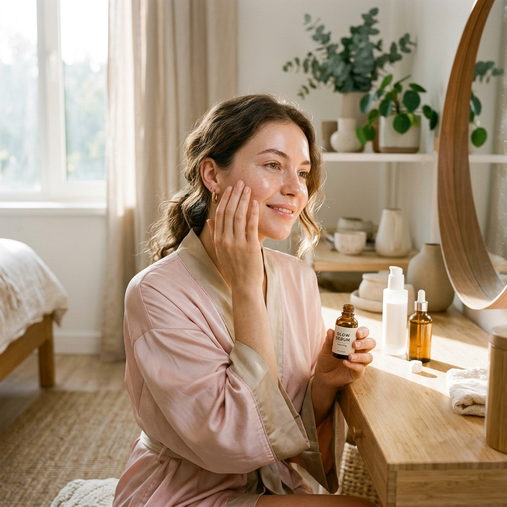

Paso a Paso Diurno 30 min
☀️ 3 Pasos Esenciales
Rutina Facial de Mañana
Prepara y defiende tu rostro de agresiones ambientales antes de comenzar el día con tres gestos imprescindibles:
- 1. Limpieza suave: Retira sudor y sebo nocturno.
- 2. Hidratación: Elasticidad y agua superficial.
- 3. Protector solar: Escudo diario contra rayos UV.